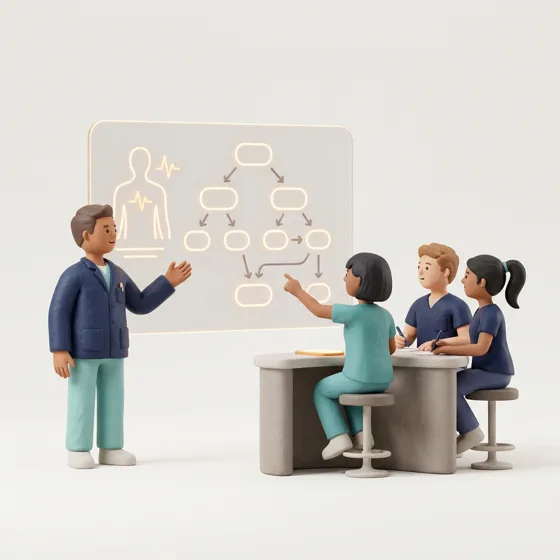
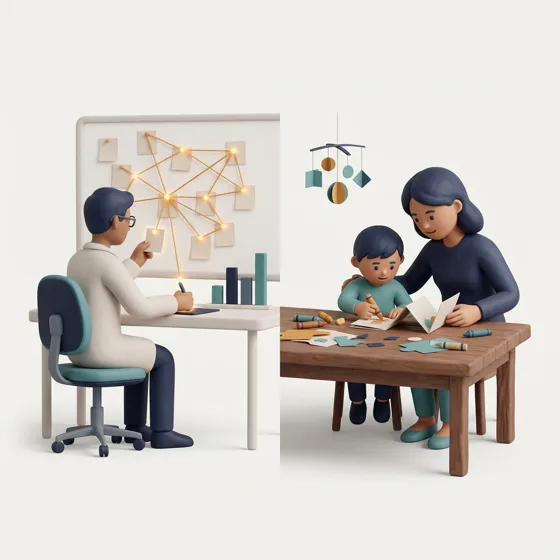

D1会用、用对、用在教学上
10 月 31 日 · 周六
01开场：AI 是怎么走到今天的开场
讲从 AlphaGo 第 37 手讲到 MYCIN：会生成 ≠ 真知道
练让 AI 讲 AI 简史，分组挑错
02提问基本功：把问题问清楚必讲
讲六要素：角色、任务、背景、要求、格式、边界
练把本周一个真实问题改写成好提示词
03AI 做医学教学课件重头戏
讲从"讲知识"到"搭场景"：病例模拟、互动图谱
练做一页互动课件或一道分支病例题
04医生也能指挥一支 AI 队进阶
讲首诊负责制 + 会诊单：谁派活，谁负责到底
练给常用任务写一张"会诊单"
D2科研与孩子
11 月 1 日 · 周日
05文献综述：每句话追到原文核心
讲检索 → 筛选 → 证据表 → 分级；事实 / 关联 / 推测
练AI 的 5 条结论逐条核对 PubMed
06统计与可复现科研
讲AI 写代码很快，结论要能被别人复现
练模拟数据写分析代码，逐行解释
07知识图谱找研究空白可选
讲看哪里证据密、哪里还空着
练找一个小课题，写成 PICO
08AI 陪孩子学习孩子
讲不替孩子写作业，陪孩子做项目
练把孩子正在读的一页书做成伴读材料
09压轴：科研写作全流程压轴
讲团队殷教授独立开发：从选题、文献到成稿、投稿，一条工作流走完
练用自己的课题走一遍关键节点，标出哪里必须人来判断
★ 殷教授现场演示
10收尾：驯化算法，守住判断收尾
讲人做决定，AI 跑路线
练展示成品：AI 做了什么，我核对了什么